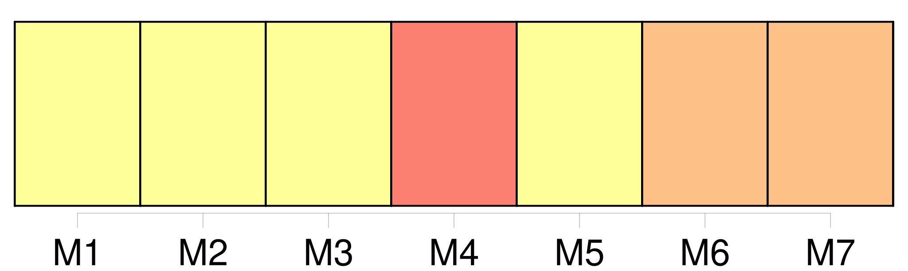
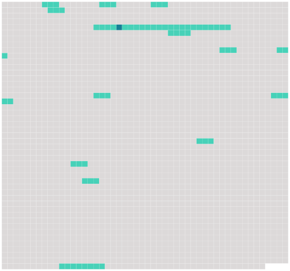

Longueur nb maillons : 16 mentions |
  |
De la jouissance et de la privation [des droits civils] [1 phrases]
De la jouissance [des droits civils] [1 phrases]
L'exercice [des droits civils] est indépendant de la qualité de Citoyen, laquelle ne s'acquiert et ne se conserve que conformément à la loi constitutionnelle. [1 phrases]
Tout Français jouira [des droits civils] [6 phrases]
L'étranger jouira en France [des mêmes droits civils] [que] [ceux qui sont ou seront accordés aux Français par les traités de la nation à laquelle cet étranger appartiendra] [3 phrases]
L'étranger qui aura été admis par le Gouvernement à établir son domicile en France y jouira de [tous les droits civils] , tant qu'il continuera d'y résider. [7 phrases]
De la privation [des droits civils] [1 phrases]
De la Privation [des Droits civils] par la perte de la qualité de Français. [14 phrases]
De la Privation [des Droits civils] par suite des condamnations judiciaires. [1 phrases]
Les condamnations à des peines dont l'effet est de priver celui qui est condamné, de toute participation [aux droits civils ci-après exprimés] , emporteront la mort civile. [19 phrases]
Les condamnés par contumace seront, pendant les cinq ans, ou jusqu'à ce qu'ils se représentent ou qu'ils soient arrêtés pendant ce délai privés de l'exercice [des droits civils] [4 phrases]
Lorsque le condamné par contumace, qui ne se sera représenté ou qui n'aura été constitué prisonnier qu'après les cinq ans, sera absous par le nouveau jugement, ou n'aura été condamné qu'à une peine qui n'emportera pas la mort civile, il rentrera dans la plénitude de [ses droits civils] , pour l'avenir, et à compter du jour où il aura reparu en justice mais le premier jugement conservera, pour le passé, les effets que la mort civile avait produits dans l'intervalle écoulé depuis l'époque de l'expiration des cinq ans jusqu'au jour de sa comparution en justice. [4 phrases]
En aucun cas la prescription de la peine ne réintégrera le condamné dans [ses droits civils] pour l'avenir. [43 phrases]
Tout acte de [l'état civil des Français en pays étranger] sera valable s'il a été reçu conformément aux lois françaises, par les agens diplomatiques, ou par les commissaires des relations commerciales de la République. |
 |
La ressource peut être téléchargée sur la page Ortolang
Si vous avez des questions ou vous voyez des erreurs, merci d'envoyer un mail à silvia.federzoni89@gmail.com
Site développé par S. Federzoni (contact)